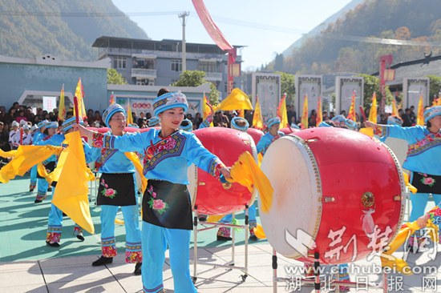

三岔沟村 · 2018 年
黄玉玲：从村民到“鼓王”

2018 年 11 月 1 日，茅田举行首届土苗鼓文化艺术节。十二支代表队、一百二十名村民参加鼓王角逐，最后由三岔沟村的黄玉玲夺魁，获授苗鼓“凤棒”。
这场比赛的主角来自村庄。苗鼓和其他民间鼓乐，从乡亲的生活中走到游客面前。一个人的获奖，也让更多人看见茅田还有这样一群会打鼓、爱打鼓的人。
读这段往事，可以先记住黄玉玲的名字，再看看照片里一起上场的乡亲。茅田的鼓文化，既有出众的鼓手，也有许多参与其中的普通人。
查看图文出处与说明
荆楚网 · 恩施建始举办鼓王争霸赛 土苗鼓点敲出来的传承 · 2018-11-02 ↗茅田村民表演苗鼓 · 荆楚网记者刘静怡摄，2018 年；并非黄玉玲个人肖像。